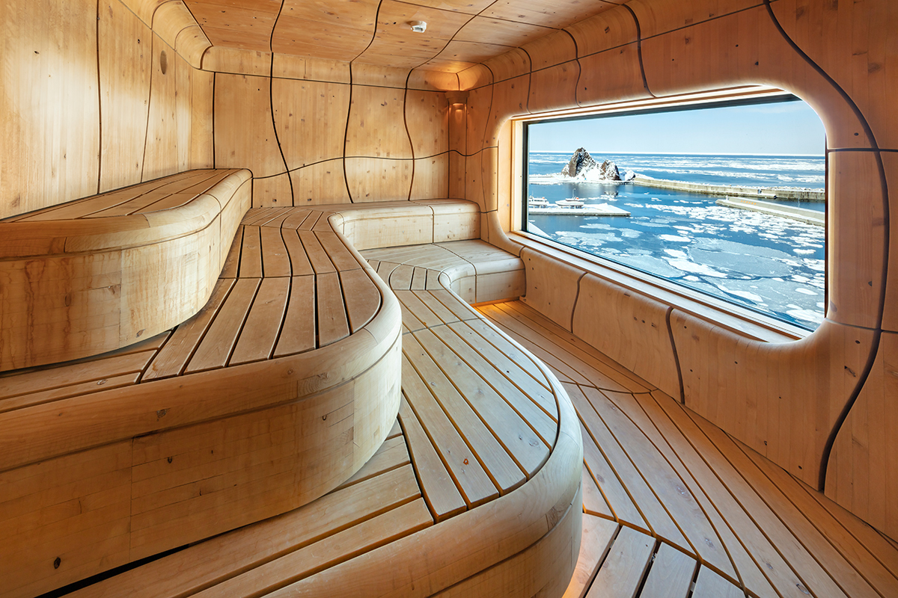
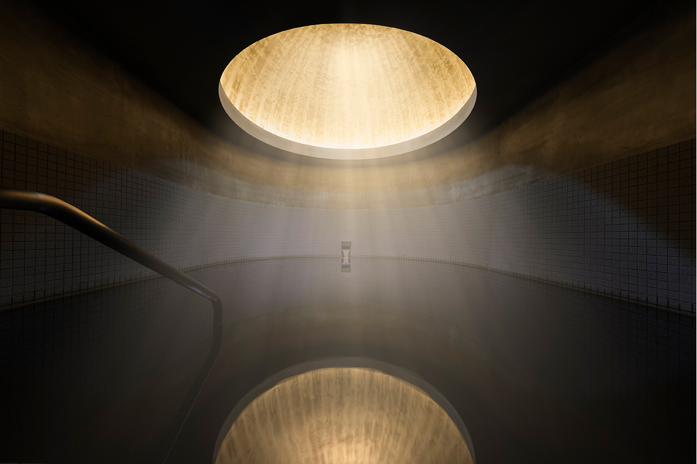
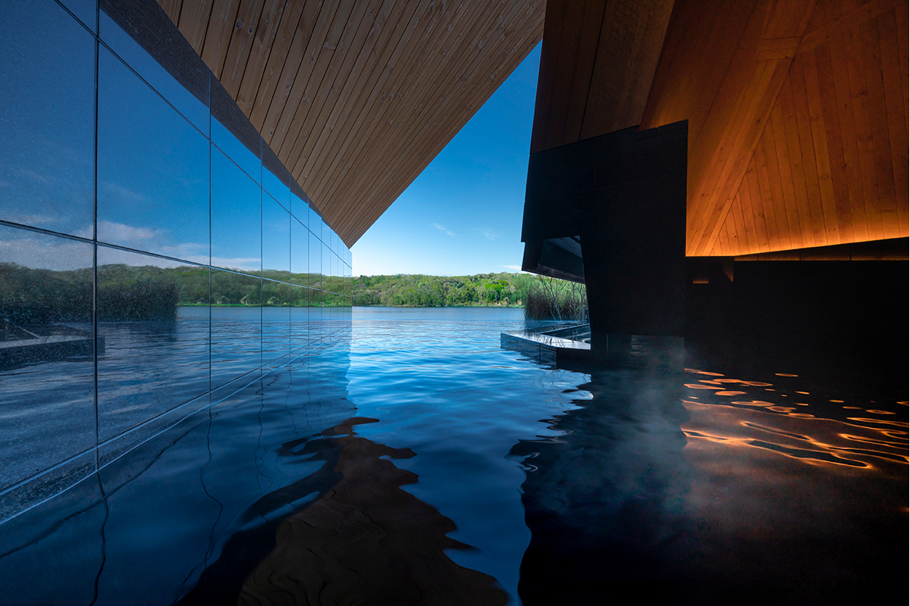
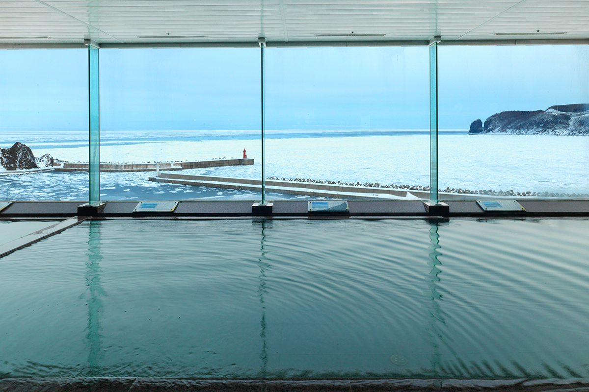

Префектура Хоккайдо · Сираой и Сиретоко · онсэн и сауна
Архитектура пара и горячей воды: два онсэна Хоккайдо, куда едут ради формы, а не только ради воды

По всей Японии есть онсэны и сауны, куда стоит ехать не только за горячей водой, но и за архитектурой. На Хоккайдо мы выбрали два таких места: редкий бурый источник у озера Порото и сауны с видом на дрейфующий лёд Сиретоко.
Онсэн
KAI Poroto: бани по мотивам айнских построек
Рёкан KAI Poroto стоит на берегу озера Порото в городке Сираой, на тихоокеанском побережье Хоккайдо. Озеро видно из каждого номера, а воду из него провели прямо на территорию, поэтому гость всё время чувствует себя будто в объятиях озера.
Вода здесь особенная. Это «моор-онсэн», источник с органическими веществами растительного происхождения, и в мире таких немного. Вода бурая, щелочная, температура источника 37,2 °C, и в бани её подают подогретой и разбавленной.

Купаются в двух банных домиках, и оба совсем не похожи друг на друга. «Треугольная баня», «Санкаку-но ю», стоит под острыми крышами. «Круглая баня», «Мару-но ю», спрятана под куполом. Подсказки для обеих архитектор Хироси Накамура и его бюро NAP Architects нашли в постройках айнов, коренного народа Хоккайдо, и в этих пространствах есть что-то таинственное, совсем не повседневное.

В горячем бассейне «Треугольной бани» вода проточная, она не ходит по кругу. Подробнее о рёкане, его номерах и ужине рассказываем в статье KAI Poroto.
KAI Poroto
- Адрес
- префектура Хоккайдо, уезд Сираой, Сираой, Вакакуса-тё, 1-1018-94
- Телефон
- +81 50-3134-8092
- Часы работы
- обе бани 15:00–1:00 и 5:00–11:00
- Выходные
- нет
- Цены / Вход
- от 31 000 иен (2025)
Сауна
KITAKOBUSHI SHIRETOKO: пар над Охотским морем
Полуостров Сиретоко на востоке Хоккайдо до сих пор почти не тронут человеком и входит в список Всемирного природного наследия. В посёлке Уторо стоит отель KITAKOBUSHI SHIRETOKO Hotel & Resort, и после обновления в нём работают две сауны совсем разного характера.
KAKUUNA напоминает мощную глыбу дрейфующего льда. UNEUNA построена плавными изгибами и изображает деревянную пещеру. Из обеих видно Охотское море, а с конца января до марта по нему плывут льдины. Между морем и небом хорошо сбросить повседневную усталость.

Сауна сухая, на 10 человек, жар около 90 °C. Вода в холодном бассейне около 15,7 °C, в зависимости от сезона. Отдыхать после парной можно на крыше под открытым небом, на террасе TOKONOU TERRACE и в полуоткрытой зоне, а в помещении стоят стулья, скамьи и шезлонги. Сауны открыты только для тех, кто остаётся на ночь. Подробно о них и об ужине отеля мы писали в статье KITAKOBUSHI SHIRETOKO Hotel & Resort.
KITAKOBUSHI SHIRETOKO Hotel & Resort
- Адрес
- префектура Хоккайдо, уезд Сяри, Сяри, Уторо-Хигаси, 172
- Телефон
- +81 152-24-2021 (по будням 10:00–18:00)
- Часы работы
- 5:00–10:00, 15:00–24:00
- Выходные
- нет (кроме дней, когда закрыт отель)
- Цены / Вход
- от 25 300 иен с налогом, курортный налог 150 иен отдельно; только для гостей отеля (2025)
- Сайт
- shiretoko.co.jp